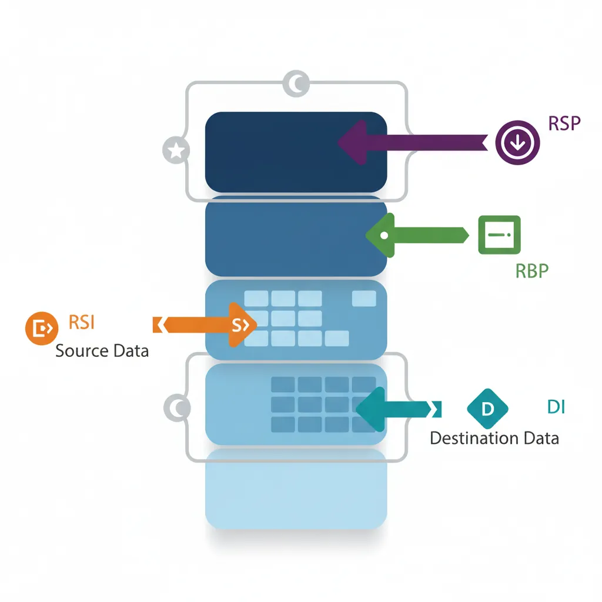
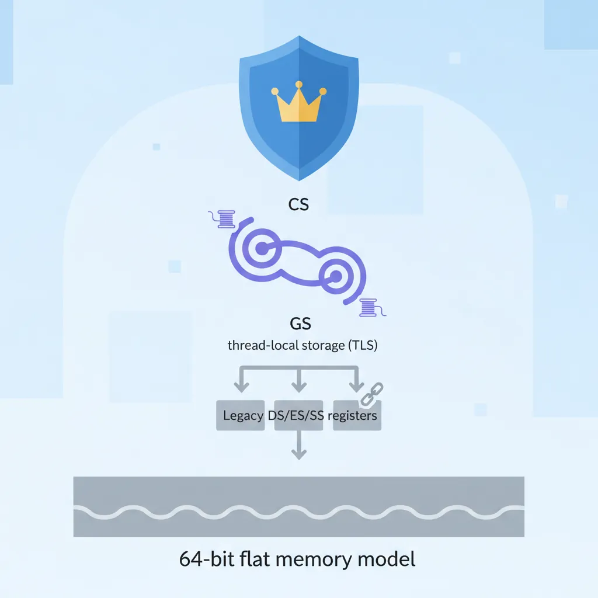
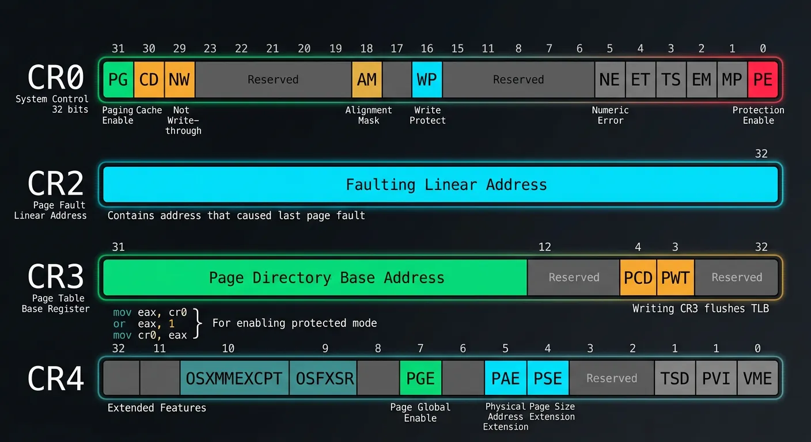
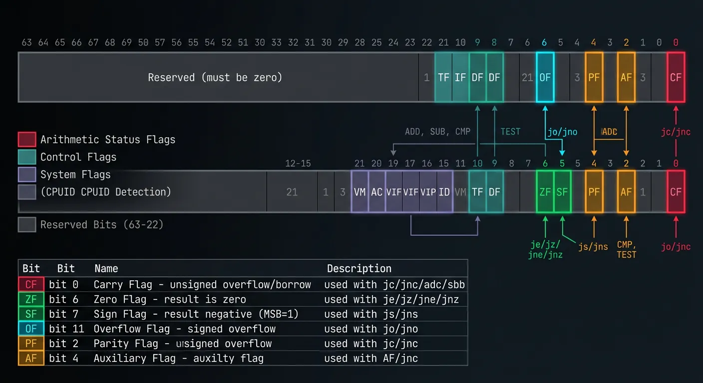
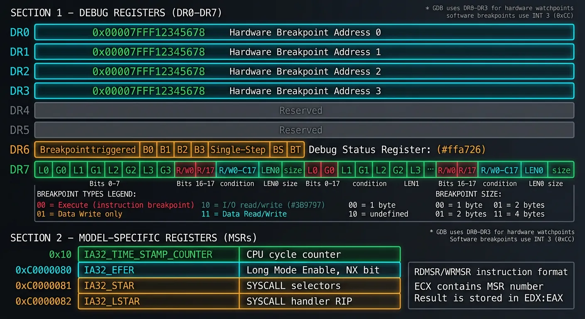

x86 Assembly Series Part 3: Registers – Complete Deep Dive
February 6, 2026Wasil Zafar35 min read
Master all x86/x64 registers including general-purpose registers (RAX-R15), segment registers, control registers (CR0-CR4), the flags register, debug registers, and model-specific registers (MSRs).
Core Concept: General-purpose registers are the CPU's working memory. x86-64 provides 16 64-bit general-purpose registers (RAX-R15) that can be accessed in different sizes for backward compatibility.
Understanding how partial register writes behave is crucial to avoid subtle bugs:
The Zero-Extension Rule (64-bit mode)
; CRITICAL RULE: Writing to 32-bit register ZEROS the upper 32 bits!
mov rax, 0xFFFFFFFF_FFFFFFFF ; RAX = full 64-bit value
mov eax, 0x12345678 ; RAX = 0x00000000_12345678 (!)
; But 8-bit and 16-bit writes DO NOT zero-extend:
mov rax, 0xFFFFFFFF_FFFFFFFF ; RAX = full 64-bit value
mov ax, 0x1234 ; RAX = 0xFFFFFFFF_FFFF1234
mov al, 0x56 ; RAX = 0xFFFFFFFF_FFFF1256
Common Bug Source: Forgetting that mov eax, val clears the upper 32 bits of RAX. This is intentional (avoids partial register stalls) but catches beginners. Use mov rax, val or explicit zero-extension when needed.
Performance: Partial Register Stalls
; This code may stall on older CPUs:
mov rax, 0
mov ah, 1 ; Write to partial register (AH)
mov rbx, rax ; Read full register - possible stall!
; Better: Avoid AH/BH/CH/DH in 64-bit code
movzx eax, byte [value] ; Zero-extend to full register
shl eax, 8 ; Shift to "AH position" if needed
REX Prefix Impact
; The high-byte registers (AH, BH, CH, DH) cannot be used
; when any REX prefix is present (which is required for R8-R15)
mov ah, 5 ; OK: no REX needed
mov r8b, 5 ; OK: uses REX prefix
mov ah, r8b ; ERROR: Can't encode AH with REX prefix!
; New low-byte registers (SIL, DIL, BPL, SPL) require REX
mov sil, 5 ; OK: REX prefix generated automatically
These registers have hardware-supported roles in memory addressing and stack operations.

Index and pointer registers — RSP (stack pointer), RBP (base pointer), RSI (source index), and RDI (destination index) and their roles in stack frames and memory addressing
RSP — Stack Pointer
; RSP always points to the TOP of the stack (last pushed value)
; Stack grows DOWNWARD on x86!
push rax ; RSP -= 8, then [RSP] = RAX
pop rbx ; RBX = [RSP], then RSP += 8
; Direct stack manipulation:
sub rsp, 32 ; Reserve 32 bytes on stack
mov [rsp+8], rdi ; Store value in reserved space
add rsp, 32 ; Release reserved space
; CRITICAL: RSP must be 16-byte aligned before CALL on x86-64!
; The ABI expects it. Violating this crashes on some SIMD instructions.
RBP — Base Pointer (Frame Pointer)
; Traditional stack frame setup
my_function:
push rbp ; Save caller's frame pointer
mov rbp, rsp ; Establish our frame
sub rsp, 32 ; Local variables
; Access locals via RBP (constant offset throughout function)
mov [rbp-8], rdi ; First local variable
mov [rbp-16], rsi ; Second local variable
; Access parameters (after return address and saved RBP)
; Stack args (if any) at [rbp+16], [rbp+24], ...
leave ; Equivalent to: mov rsp, rbp; pop rbp
ret
; Frame pointer can be omitted (-fomit-frame-pointer) for more registers
; But debugging becomes harder
RSI & RDI — Source & Destination Index
; Originally for string operations (auto-increment/decrement)
mov rsi, source_buffer
mov rdi, dest_buffer
mov rcx, 100 ; Count
cld ; Clear direction flag (forward)
rep movsb ; Copy RCX bytes from [RSI] to [RDI]
; Also used as first two arguments in System V AMD64 ABI:
; my_func(arg1, arg2) → RDI=arg1, RSI=arg2
Calling Conventions:
System V AMD64 (Linux, macOS): RDI, RSI, RDX, RCX, R8, R9
Microsoft x64 (Windows): RCX, RDX, R8, R9
Return value: RAX (and RDX for 128-bit returns)
Segment Registers
Legacy from segmented memory days, but still relevant for special purposes in 64-bit mode.

x86 segment registers — CS for code privilege level, FS/GS for thread-local storage (TLS), and legacy DS/ES/SS registers in 64-bit flat memory model
Segment Register Overview
Register
Name
64-bit Mode Use
CS
Code Segment
Required for privilege level (ring), not for addressing
DS, ES, SS
Data, Extra, Stack
Ignored (treated as base 0)
FS
Extra Segment
Thread-Local Storage on Windows (TEB)
GS
Extra Segment
TLS on Linux, kernel per-CPU data
Using FS and GS for Thread-Local Storage
; Linux: GS points to thread-local block
mov rax, [gs:0x28] ; Read stack canary (security)
; Windows: FS points to Thread Environment Block (TEB)
mov rax, [fs:0x30] ; Get PEB (Process Environment Block) pointer
mov rax, [fs:0x00] ; Current SEH chain
; Kernel mode: GS often holds per-CPU data pointer
mov rax, [gs:0x00] ; Per-CPU structure base
Setting Up Segment Base (Kernel/System Code)
; MSR-based segment base (no GDT entry needed in 64-bit)
; FS base: MSR 0xC0000100
; GS base: MSR 0xC0000101
; Kernel GS base: MSR 0xC0000102 (swapped on syscall)
; Write to FS base:
mov ecx, 0xC0000100 ; FS.base MSR
mov eax, tls_area ; Low 32 bits
mov edx, 0 ; High 32 bits (or upper bits of address)
wrmsr ; Write MSR (Ring 0 only!)
Security Note: The swapgs instruction (used in syscall handlers) atomically swaps GS base with the kernel's GS base. This prevents user mode from seeing kernel per-CPU data, critical for security.
Control Registers
Control registers configure CPU operating modes and memory management. Access requires Ring 0 (kernel) privilege.

x86 control registers — CR0 (protection/paging enable), CR2 (page fault address), CR3 (page table base), and CR4 (extended CPU features)
CR0 — System Control
CR0 Layout:
┌───┬───┬───┬───┬───┬───┬───┬───┬───┬───┬───┬───┬───┬───┬───┬───┐
Bit: 31 30 29 28 ... 18 16 5 4 3 2 1 0
│ PG │ CD │ NW │ │ │ AM │ WP │ NE │ ET │ TS │ EM │ MP │ PE │
└─┴──┴──┴──┴───┴──┴──┴──┴──┴──┴──┴──┴──┴──┴──┴──┘
│ │ │ │ └─ PE: Protection Enable
│ │ │ └─ WP: Write Protect (Ring 0 can't write to R/O pages)
└─────┴─────┴─ PG: Paging Enable, CD: Cache Disable, NW: Not Write-through
; Enable Protected Mode (from real mode bootloader)
mov eax, cr0
or eax, 1 ; Set PE bit
mov cr0, eax
; Enable Paging (already in protected mode)
mov eax, cr0
or eax, (1 << 31) ; Set PG bit
mov cr0, eax
CR2 — Page Fault Address
; CR2 contains the address that caused the most recent page fault
; Used in page fault handlers:
page_fault_handler:
mov rax, cr2 ; Get faulting address
; ... determine if it's valid, map the page, etc.
iretq
CR3 — Page Table Base
; CR3 holds the physical address of the top-level page table
; PML4 in 64-bit mode, Page Directory in 32-bit
mov eax, new_page_table_phys ; Physical address of PML4
mov cr3, rax ; Flush TLB and switch address space
; Note: Writing to CR3 flushes the TLB (Translation Lookaside Buffer)
; Use INVLPG for selective TLB invalidation:
invlpg [address] ; Invalidate TLB entry for specific address
CR4 — Extended Features
; CR4 enables various CPU extensions
mov rax, cr4
or rax, (1 << 5) ; PAE: Physical Address Extension
or rax, (1 << 7) ; PGE: Page Global Enable
or rax, (1 << 9) ; OSFXSR: FXSAVE/FXRSTOR support
or rax, (1 << 10) ; OSXMMEXCPT: SIMD floating-point exceptions
mov cr4, rax
Ring 0 Only: Control registers can only be accessed from kernel mode. Attempting to read/write CRx from user mode triggers a General Protection Fault (#GP).
Flags Register (EFLAGS/RFLAGS)
The flags register tracks arithmetic results and controls CPU behavior. Understanding flags is essential for conditional branching.

RFLAGS register bit layout — arithmetic status flags (CF, ZF, SF, OF, PF, AF) and control flags (DF, IF, TF) used for conditional branching and CPU behavior
; Direction Flag (DF) - controls string operation direction
cld ; Clear DF: strings go forward (SI++, DI++)
std ; Set DF: strings go backward (SI--, DI--)
; Interrupt Flag (IF) - enable/disable hardware interrupts
sti ; Enable interrupts (Ring 0 only)
cli ; Disable interrupts (Ring 0 only)
; Trap Flag (TF) - single-step debugging
; When set, CPU generates INT 1 after each instruction
Flag Operations
; Saving and restoring flags
pushfq ; Push RFLAGS onto stack
popfq ; Pop stack into RFLAGS
; Read flags into AH (low 8 bits only)
lahf ; AH = SF:ZF:0:AF:0:PF:1:CF
sahf ; Restore those flags from AH
; Directly manipulating carry flag
stc ; Set CF = 1
clc ; Clear CF = 0
cmc ; Complement (toggle) CF
Exercise: Understanding Flags
; What flags are set after each operation?
mov al, 0xFF
add al, 1 ; AL=?, CF=?, ZF=?, OF=?, SF=?
mov al, 127
add al, 1 ; AL=?, CF=?, ZF=?, OF=?, SF=?
mov al, 0
sub al, 1 ; AL=?, CF=?, ZF=?, OF=?, SF=?
Hardware debugging and CPU configuration registers for system-level development.

Debug registers (DR0–DR7) for hardware breakpoints and Model-Specific Registers (MSRs) for CPU feature configuration and performance monitoring
Debug Registers (DR0-DR7)
DR0-DR3: Hardware breakpoint addresses (up to 4 breakpoints)
DR4-DR5: Reserved (aliased to DR6-DR7 if not in debug extension mode)
DR6: Debug Status - which breakpoint triggered
DR7: Debug Control - enable/configure breakpoints
DR7 Breakpoint Types:
00 = Execute (instruction fetch)
01 = Write only (data)
10 = I/O read/write (if CR4.DE=1)
11 = Read/Write (data)
Setting Hardware Breakpoints
; Set a hardware breakpoint on memory write (Ring 0 only)
mov rax, target_address ; Address to watch
mov dr0, rax ; Load into DR0
; Configure DR7: enable DR0, write-only, 4-byte size
; Bits [1:0] = G0/L0 = global/local enable for DR0
; Bits [17:16] = R/W0 = condition (01 = write)
; Bits [19:18] = LEN0 = size (11 = 4 bytes)
mov rax, 0x000D0001 ; G0=1, R/W0=01, LEN0=11
mov dr7, rax
; When target_address is written, INT 1 fires
; DR6 will indicate which breakpoint triggered
GDB Uses These: When you set a hardware watchpoint in GDB (watch variable), it programs the debug registers. Software breakpoints (break) use INT 3 (opcode 0xCC) instead.
Model-Specific Registers (MSRs)
MSRs are CPU-specific configuration registers accessed via RDMSR/WRMSR:
; Read MSR (Ring 0 only)
; ECX = MSR number, result in EDX:EAX
mov ecx, 0x10 ; IA32_TIME_STAMP_COUNTER
rdmsr ; EDX:EAX = TSC value
; Write MSR
; ECX = MSR number, EDX:EAX = value to write
mov ecx, 0xC0000080 ; IA32_EFER (Extended Feature Enable)
rdmsr
or eax, (1 << 8) ; Set LME (Long Mode Enable)
wrmsr
Common MSRs
MSR Number
Name
Purpose
0x10
IA32_TIME_STAMP_COUNTER
CPU cycle counter (also accessible via RDTSC)
0xC0000080
IA32_EFER
Long mode enable, NX bit enable
0xC0000081
IA32_STAR
SYSCALL/SYSRET segment selectors
0xC0000082
IA32_LSTAR
SYSCALL entry point (64-bit)
0xC0000100
IA32_FS_BASE
FS segment base address
0xC0000101
IA32_GS_BASE
GS segment base address
User-Space: RDTSC
; RDTSC is one MSR readable from user mode (Ring 3)
; Returns 64-bit timestamp in EDX:EAX
rdtsc ; EDX:EAX = timestamp
shl rdx, 32 ; Move EDX to upper 32 bits
or rax, rdx ; Combine into RAX
; Or use RDTSCP (serializing version, also returns processor ID)
rdtscp ; EDX:EAX = timestamp, ECX = processor ID
Continue the Series
Part 2: x86 CPU Architecture Overview
Understand execution modes, privilege rings, and CPU internals.